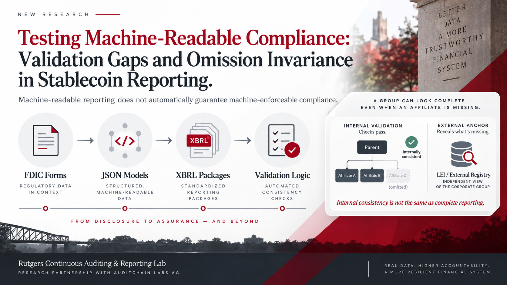

Architectural Vision
Project Description
Machine-readable regulation promises faster, more automated supervision—but a structured filing is not necessarily a fully enforced one.
This study examines the gap in the emerging GENIUS Act reporting environment by tracing regulatory requirements from the FDIC’s proposed PS-01, PS-01a, and PS-02 forms through their JSON source models, generated XBRL packages, and executable validation logic.

The analysis reveals an important distinction between internal consistency and reporting completeness. The current models contain 913 validation rule rows and preserve their structural content remarkably well through XBRL generation, yet the validation layer is transformed in ways that affect how compliance is interpreted. Most importantly, the paper develops the concept of omission invariance: when every operand used by a validation rule comes from the filing itself, an affiliate can be omitted consistently while the internal checks remain satisfied.
Internal consistency is not the same as complete reporting.
This finding changes the way machine-readable compliance should be understood. Automated validation can test whether reported facts agree with one another, but it cannot by itself establish that the reporting boundary is complete. The paper therefore proposes a supervisory architecture that combines internal XBRL validation for consistency with external anchoring for completeness, helping define where automated checking ends and independent verification must begin.
The analysis begins with the proposed PS-01, PS-01a, and PS-02 forms and verifies how each form’s schedules and reporting requirements are implemented in the current machine-readable models.
The source models are examined for concepts, structures, associations, facts, dimensions, and validation-rule collections to establish what the reporting architecture actually contains.
The generated schemas, linkbases, instances, dimensional structures, and assertions are reconciled against the JSON source models to determine whether structural and validation content survives generation.
The executable validation layer is evaluated using a presence–execution ladder that distinguishes whether an assertion exists, parses, executes, binds the intended facts, and ultimately passes.
The four-layer evidence pipeline separates regulatory requirements, source-model design, delivered XBRL artifacts, and executable validation outcomes so that machine-readable structure is not mistaken for effective validation or complete reporting.